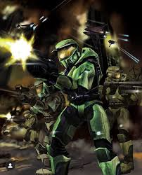
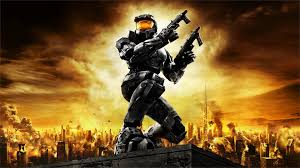
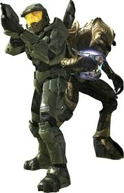

Halo es una franquicia de videojuegos de ciencia ficción creada por Bungie y ahora gestionada por 343 Industries.
  Aprende más sobre la serie Halo:
La historia de Halo se centra en una guerra interestelar entre la humanidad y una alianza de alienígenas conocida como el Covenant.
El protagonista es Master Chief, un supersoldado equipado con armaduras y armas avanzadas. Se sitúa en el siglo XXVI, donde la humanidad, bajo el mando de la UNSC (Comando Espacial de las Naciones Unidas), lucha contra una alianza alienígena teocrática conocida como el Covenant. Esta alianza busca destruir a la humanidad, a la que consideran una ofensa a sus dioses. La trama sigue al supersoldado conocido como el Jefe Maestro (Master Chief) mientras combate al Covenant y descubre antiguos artefactos alienígenas llamados "Halos", capaces de destruir toda vida en la galaxia. A lo largo de la serie, se exploran temas de guerra, sacrificio y supervivencia, así como la historia del Flood, una especie parasitaria, y los Forerunners, la antigua civilización que construyó los Halos.
Nota: La serie ha recibido numerosos premios y es considerada una de las mayores franquicias de videojuegos 2 de todos los tiempos 1.